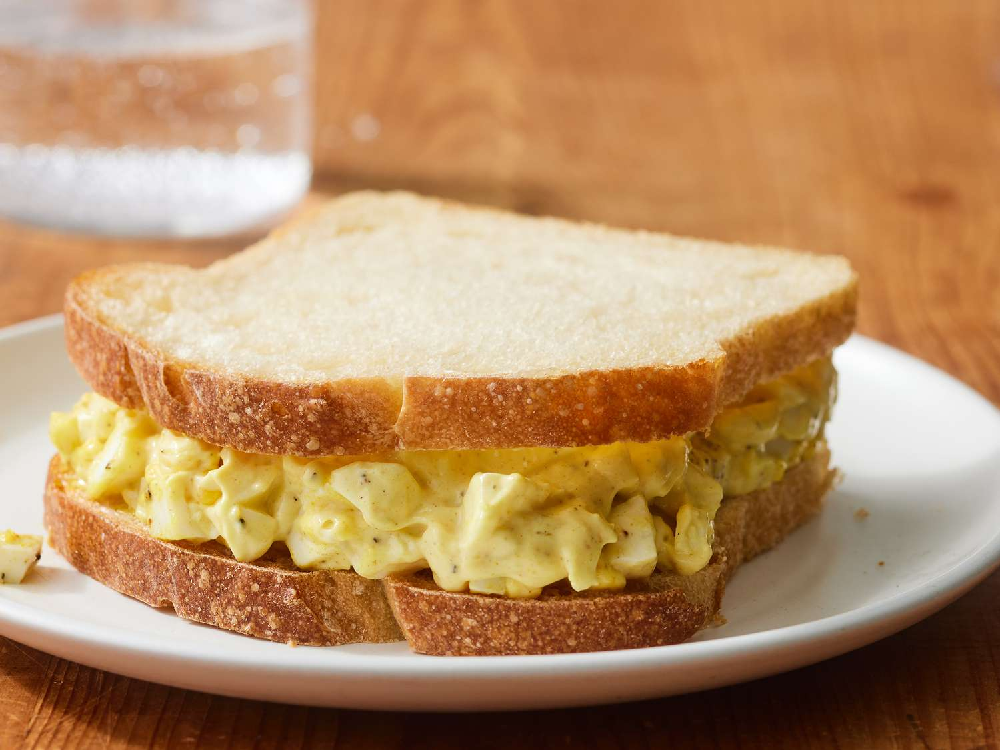

Ingredients
- 2 eggs
- Greek yogurt
- Mustard, pepper, salt and honey
- Put water to boil, after that, put the eggs and let them cook for 10 minutes
- After 10 minutes, peel the eggs and remove the yolks from the rest
- Mix the yolk and the greek yogurt until it turns one only mixture.
- Add 1 spoon of mustard, pepper, salt, and honey
- Serve with bread or any other food and enjoy
Return to top
Return to main page